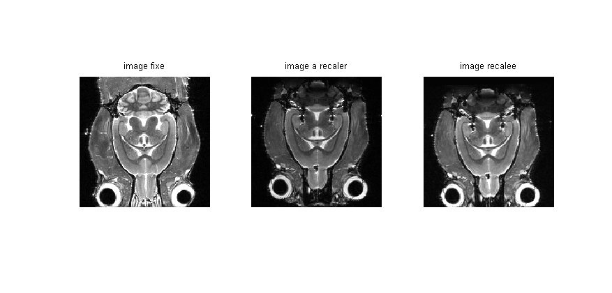
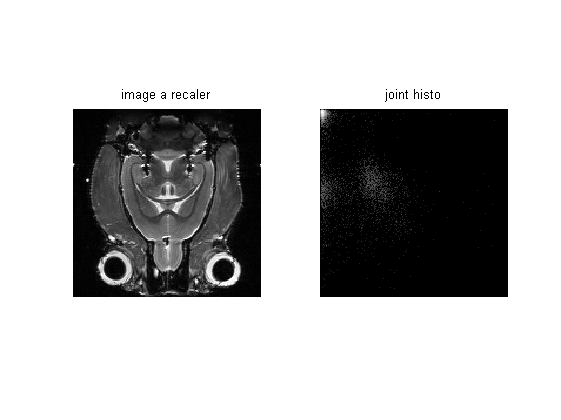
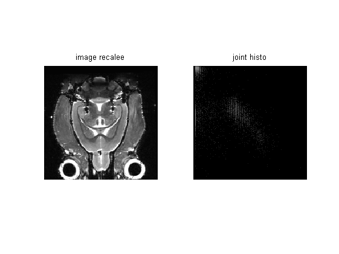
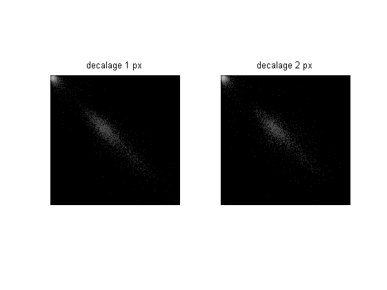

Contents
function varargout = demoImJointHistogram(varargin)
Chargement des images
img1 = imread('img1.bmp');
img2 = imread('img2.bmp');
rec = imread('res-rigid2.tif');
figure(1); clf;
subplot(131);
imshow(img1);
title('image fixe');
subplot(132);
imshow(img2);
title('image a recaler');
subplot(133);
imshow(rec);
title('image recalee');

Avant recalage
res = imJointHistogram(img1, img2);
figure(2);
subplot(121);
imshow(img2)
title('image a recaler');
subplot(122);
imshow(log(res), [0 log(max(res(:)))]);
title('joint histo');

Apres recalage
res2 = imJointHistogram(img1, rec);
figure(3);
subplot(121);
imshow(rec);
title('image recalee');
subplot(122);
imshow(log(res2), [0 log(max(res2(:)))]);
title('joint histo');

Decalage de l'image de depart
hDec1 = imJointHistogram(img1(1:end-1, :), img1(2:end, :));
hDec2 = imJointHistogram(img1(1:end-2, :), img1(3:end, :));
figure(4); clf;
subplot(121);
imshow(log(hDec1), [0 log(max(hDec1(:)))]);
title('decalage 1 px');
subplot(122);
imshow(log(hDec2), [0 log(max(hDec2(:)))]);
title('decalage 2 px');
